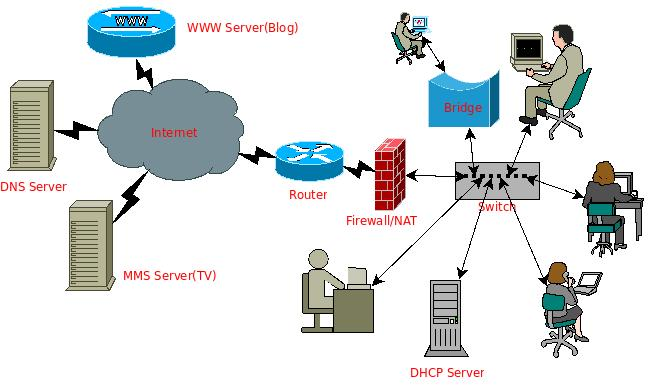
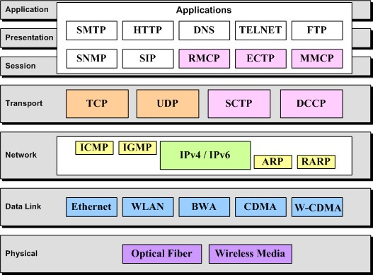

网络操作
前言
前面章节已经介绍了Shell编程范例之数值、布尔值、字符串、文件、文件系统、进程等的操作。这些内容基本覆盖了网络中某个独立机器正常工作的“方方面面”，现在需要把视角从单一的机器延伸到这些机器通过各种网络设备和协议连接起来的网络世界，分析网络拓扑结构、网络工作原理、了解各种常见网络协议、各种常见硬件工作原理、网络通信与安全相关软件以及工作原理分析等。
不过，因为网络相关的问题确实太复杂了，这里不可能介绍具体，因此如果想了解更多细节，还是建议参考相关资料。但Linux是一个网络原理学习和实践的好平台，不仅因为它本身对网络体系结构的实现是开放源代码的，而且各种相关的分析工具和函数库数不胜数，因此，如果你是学生，千万不要错过通过它来做相关的实践工作。
网络原理介绍
我们的网络世界
在进行所有介绍之前，来直观地感受一下那个真真实实存在的网络世界吧。当我在 Linux 下通过 Web 编辑器写这篇 Blog 时，一边用 mplayer 听着远程音乐，累了时则打开兰大的网络 TV 频道开始看看凤凰卫视……这些“现代化”的生活，我想，如果没有网络，将变得无法想象。
下面来构想一下这样一个网络世界的优美图画：
一边盯着显示器，一边敲击着键盘，一边挂着耳机。
主机电源灯灿烂得很，发着绿光，这时很容易想象主机背后的那个网卡位置肯定有两个不同颜色的灯光在闪烁，它显示着主机正在与计算机网络世界打着交道。
就在实验室的某个角落，有一个交换机上的一个网口的网线连到主机上，这个交换机接到了一个局域网的网关上，然后这个网关再接到了信息楼的某个路由器上，再转接到学校网络中心的另外一个路由器上……
期间，有一个路由器连接到了这个 Blog 服务器上，而另外一个则可能连到了那个网络
TV服务器上，还有呢，另外一些则连接到了电信网络里头的某个音乐服务器上……
下面用 dia 绘制一个简单的“网络地图”：

该图把一些最常见的网络设备和网络服务基本都呈现出来了，包括本地主机、路由、交换机、网桥，域名服务器，万维网服务，视频服务，防火墙服务，动态 IP 地址服务等。其中各种设备构成了整个物理网络，而网络服务则是构建在这些设备上的各种网络应用。
现在的网络应用越来越丰富多样，比如即时聊天（IM）、 p2p 资源共享、网络搜索等，它们是如何实现的，它们如何构建在各种各样的网络设备之上，并且能够安全有效的工作呢？这取决于这背后逐步完善的网络体系结构和各种相关网络协议的开发、实现和应用。
网络体系结构和网络协议介绍
那么网络体系结构是怎么样的呢？涉及到哪些相关的网络协议呢？什么又是网络协议呢？
在《计算机网络——自顶向下的方法》一书中非常巧妙地给出了网络体系结构分层的比喻，把网络中各层跟交通运输体系中的各个环节对照起来，让人通俗易懂。在交通运输体系中，运输的是人和物品，在计算机网络体系中，运输的是电子数据。考虑到交通运输网络和计算机网络中最终都可以划归为点对点的信息传输。这里考虑两点之间的信息传递过程，得到这样一个对照关系，见下图：

对照上图，更容易理解右侧网络体系结构的分层原理（如果比照一封信发出到收到的这一中间过程可能更容易理解），上图右侧是 TCP/IP 网络体系结构的一个网络分层示意图，在把数据发送到网络之前，在各层中需要进行各种“打包”的操作，而从网络接收到数据后，就需要进行“解包”操作，最终把纯粹的数据信息给提取出来。这种分层的方式是为了传输数据的需要，也是两个主机之间如何建立连接以及如何保证数据传输的完整性和可靠性的需要。通过把各种需要分散在不同的层次，使得整个体系结构更加清晰和明了。这些“需求”具体通过各种对应的协议来规范，这些规范统成为网络协议。
关于 OSI 模型（7 层）比照 TCP/IP 模型（4 层）的协议栈可以从下图（来自网络）看个明了：

而下图（来自网络）则更清晰地体现了 TCP/IP 分层模型。
上面介绍了网络原理方面的基本内容，如果想了解更多网络原理和操作系统对网络支持的实现，可以考虑阅读后面的参考资料。下面将做一些实践，即在 Linux 下如何联网，如何用 Linux 搭建各种网络服务，并进行网络安全方面的考量以及基本的网络编程和开发的介绍。
Linux 下网络“实战”
如何把我们的 Linux 主机接入网络
如果要让一个系统能够联网，首先当然是搭建好物理网络了。接入网络的物理方式还是蛮多的，比如直接用网线接入以太网，用无线网卡上网，用 ADSL 拨号上网……
对于用以太网网卡接入网络的常见方式，在搭建好物理网络并确保连接正常后，可以通过配置 IP 地址和默认网关来接入网络，这个可以通过手工配置和动态获取两种方式。
范例：通过dhclient获取IP地址
如果所在的局域网有 DHCP 服务，那么可以这么获取，N 是设备名称，如果只有一块网卡，一般是 0 或者 1 。
$ dhclient ethN
范例：静态配置IP地址
当然，也可以考虑采用静态配置的方式，ip_address 是本地主机的 IP 地址，gw_ip_address 是接入网络的网关的 IP 地址。
$ ifconfig eth0 ip_address on
$ route add deafult gw gw_ip_address
如果上面不工作，记得通过 ifconfig/mii-tool/ethtool 等工具检查网卡是否有被驱动起来，然后通过 lspci/dmesg 等检查网卡类型（或者通过主板手册和独立网卡自带的手册查看），接着安装或者编译相关驱动，最后把驱动通过 insmod/modprobe 等工具加载到内核中。
用 Linux 搭建网桥
网桥工作在 OSI 模型的第二层，即数据链路层，它只需要知道目标主机的 MAC 地址就可以工作。 Linux 内核在 2.2 开始就已经支持了这个功能，具体怎么配置看看后续参考资料吧。如果要把 Linux 主机配置成一个网桥，至少需要两个网卡。
网桥的作用相当于一根网线，用户无须关心里头有什么东西，把它的两个网口连接到两个主机上就可以让这两个主机支持相互通信。不过它比网线更厉害，如果配上防火墙，就可以隔离连接在它两端的网段（注意这里是网络，因为它不识别 IP），另外，如果这个网桥有多个网口，那么可以实现一个功能复杂的交换机，而如果有效组合多个网桥，则有可能实现一个复杂的可实现流量控制和负载平衡的防火墙系统。
用 Linux 做路由
路由工作在 OSI 模型的第三层，即网络层，通过 router 可以配置 Linux 的路由，当然，Linux 下也有很多工具支持动态路由的。相关的资料在网路中铺天盖地，由于时间关系，这里不做介绍。
用 Linux 搭建各种常规的网络服务
需要什么网络服务呢？
- 给局域网弄个
DHCP服务器，那就弄个dhcpd，看看参考资料； - 如果想弄个邮件发送服务器，那就安装个
sendmail或者exim4； - 如果再想弄个邮件列表服务器呢，那就装个
mailman； - 如果想弄个接收邮件的服务器呢，那就安装个
pop3服务器； - 如果想弄个
web站点，那就弄个apache或者nginx服务器； - 如果想弄上防火墙服务，那么通过
iptables工具配置netfilter就可以
What's more？如果你能想到，Linux上基本都有相应的实现。
Linux 下网络问题诊断与维护
如果出现网络问题，不要惊慌，逐步检查网络的各个层次：物理链接、链路层、网络层直到应用层，熟悉使用各种如下的工具，包括 ethereal/tcpdump，hping，nmap，netstat，netpipe，netperf，vnstat，ntop 等。
关于这些工具的详细用法和网络问题诊断和维护的相关知识，请看后续相关资料。
Linux 下网络编程与开发
如果想做网络编程开发，比如：
- 要实现一个客户端
/服务器架构的应用，可以采用 Linux 下的socket编程了； - 如果想写一个数据包抓获和协议分析的程序，可以采用
libpap等函数库； - 如果想实现某个协议呢，那就可以参考相关的
RFC文档，并通过socket编程来实现。
这个可以参考相关的 Linux socket 编程等资料。
后记
本来介绍网络相关的一些基本内容，但因时间关系，没有详述，更多细节请参考相关资料。
到这里，整个《Shell编程范例》算是很粗略地完成了，不过“范例”却缺少实例，特别是这一节。因此，如果时间允许，会逐步补充一些实例。
参考资料
- 计算机网络——自上而下的分析方法
- Linux 网络体系结构（清华大学出版社出版）
- Linux 系统故障诊断与排除 第13章 网络问题（人民邮电出版社）
- 在 Linux 下用 ADSL 拨号上网
- Linux 下无线网络相关资料收集
- Linux网桥的实现分析与使用
- DHCP mini howto
- 最佳的 75 个安全工具
- 网络管理员必须掌握的知识
- Linux 上检测 rootkit 的两种工具: Rootkit Hunter 和 Chkrootkit
- 数据包抓获与 ip 协议的简单分析（基于 pcap 库）
- RFC
- HTTP 协议的 C 语言编程实现实例